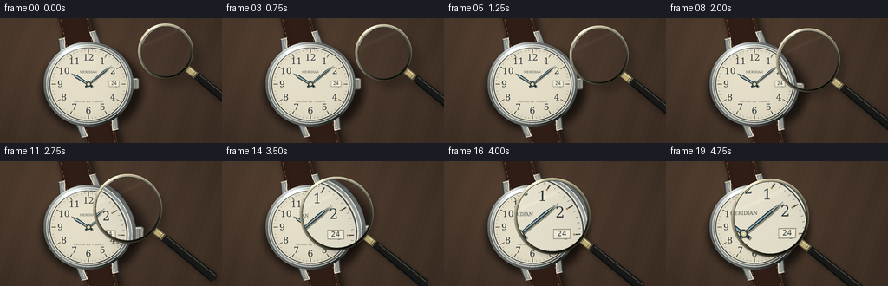
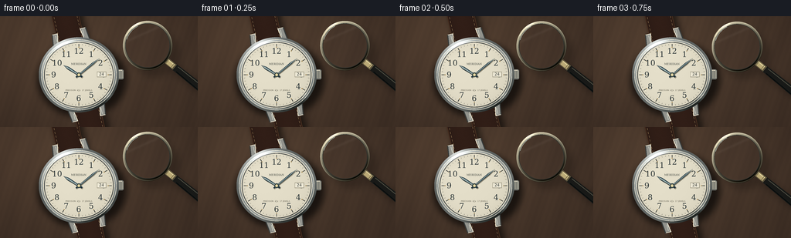

CODING AGENTS AS PIXEL WORLD MODELS
traex/GPT-6.1-Sol · phygen_067
点击播放 · 原生 RGB 像素
逐轮保存的候选
回放视频、检查图与代码变化。
每份候选均可单独播放。实际图片检查记录在下方工具轨迹中。
候选 01播放与检查图
点击播放 · 原生 RGB 像素


展开代码变化
--- 上一保存版本
+++ 本次保存版本
@@ -0,0 +1,205 @@
+from pathlib import Path
+import math
+import numpy as np
+from PIL import Image, ImageDraw, ImageFont, ImageFilter
+import artifact_io
+
+ROOT=Path(__file__).resolve().parent
+W,H,S=256,144,4
+WW,HH=W*S,H*S
+rng=np.random.default_rng(81)
+y,x=np.mgrid[0:HH,0:WW].astype(np.float32); x/=S; y/=S
+cx,cy=102.,76.
+
+def rgb_image(a): return Image.fromarray(np.uint8(np.clip(a,0,255)), 'RGB')
+def pt(p): return (int(round(p[0]*S)),int(round(p[1]*S)))
+def line(d,p,fill,width=1): d.line([pt(q) for q in p],fill=fill,width=max(1,round(width*S)))
+def ellipse(d,b,fill,outline=None,width=1):d.ellipse(tuple(int(round(v*S)) for v in b),fill=fill,outline=outline,width=max(1,round(width*S)))
+
+# A warm walnut tabletop, illuminated softly from the upper left.
+woodcoord=x+.29*y
+noise=rng.normal(0,1,(HH,WW))
+grain=1.6*np.sin(woodcoord*.19+2*np.sin(y*.016))+.9*np.sin(woodcoord*.8+y*.03)+.5*np.sin(woodcoord*3.2)
+light=15*np.exp(-((x-62)**2/17000+(y-22)**2/9000))-9*((x-128)**2/30000+(y-65)**2/18000)
+base=np.stack([66+light+grain+noise*.48,50+light*.78+grain*.78+noise*.4,39+light*.57+grain*.55+noise*.35],-1)
+im=rgb_image(base)
+# Soft contact shadow and cast shadows of the watch and its strap.
+shadow=Image.new('RGBA',(WW,HH));sd=ImageDraw.Draw(shadow)
+ellipse(sd,(cx-54,cy-43,cx+62,cy+55),(0,0,0,160))
+a=math.radians(-13)
+def wrist(u,v):return (cx+u*math.cos(a)-v*math.sin(a),cy+u*math.sin(a)+v*math.cos(a))
+sd.polygon([pt(wrist(u+4,v+5)) for u,v in [(-19,-130),(19,-130),(19,130),(-19,130)]],fill=(0,0,0,140))
+shadow=shadow.filter(ImageFilter.GaussianBlur(4*S));im=Image.alpha_composite(im.convert('RGBA'),shadow).convert('RGB')
+# Leather, slightly rounded, with a fine embossed grain.
+u=(x-cx)*math.cos(a)+(y-cy)*math.sin(a)
+v=-(x-cx)*math.sin(a)+(y-cy)*math.cos(a)
+arr=np.asarray(im).astype(np.float32)
+strap=(abs(u)<17.7)
+tex=rng.normal(0,1,(HH,WW))+.55*np.sin(u*12+np.sin(v*3))
+roundness=6*np.cos(u/18*np.pi/2)
+leather=np.stack([43+roundness+tex*1.35,27+roundness*.55+tex*.9,21+roundness*.35+tex*.75],-1)
+arr[strap]=leather[strap]
+edge=(abs(u)>16.6)&(abs(u)<17.7)
+arr[edge]=np.array([68,44,30])+tex[edge,None]*1.5
+im=rgb_image(arr);d=ImageDraw.Draw(im)
+for side in [-1,1]:
+ for vv in np.arange(-130,134,5.0):
+ line(d,[wrist(side*14.7,vv),wrist(side*14.7,vv+2.5)],(154,124,84),.52)
+ line(d,[wrist(side*14.0,vv),wrist(side*14.0,vv+2.5)],(30,20,17),.25)
+# Individually shaped steel lugs.
+for sign in [-1,1]:
+ for side in [-1,1]:
+ poly=[wrist(side*18,sign*40),wrist(side*24,sign*43),wrist(side*22,sign*58),wrist(side*15,sign*58)]
+ d.polygon([pt(q) for q in poly],fill=(145,146,140))
+ line(d,[poly[0],poly[3],poly[2]],(236,231,211),1.0)
+ line(d,[poly[1],poly[2]],(54,58,57),1.3)
+ line(d,[wrist(side*18,sign*48),wrist(side*18,sign*56)],(192,194,182),1.1)
+# Crown at three o'clock, including its milled teeth.
+d.rounded_rectangle((149*S,69*S,160*S,82*S),radius=2*S,fill=(96,99,96))
+d.rectangle((149*S,72*S,153*S,79*S),fill=(166,167,153))
+for xx in np.arange(152.8,160,.9):
+ line(d,[(xx,70.5),(xx,80.5)],(204,199,178),.42)
+ line(d,[(xx+.45,71),(xx+.45,80)],(61,66,65),.3)
+line(d,[(153,70),(158,70)],(241,232,208),.7)
+# The case is a stack of polished and brushed metallic bevels.
+arr=np.asarray(im).astype(np.float32)
+rx=x-cx; ry=(y-cy)/.94
+r=np.hypot(rx,ry); theta=np.arctan2(ry,rx)
+metalnoise=rng.normal(0,.7,(HH,WW))
+for r0,r1,color,amp in [(49,52,(96,101,99),65),(48.3,49,(233,230,213),14),(46.3,48.3,(144,150,148),66),(45.2,46.3,(231,225,204),18),(44.2,45.2,(63,67,66),20)]:
+ mask=(r>=r0)&(r<r1)
+ sheen=amp*(.65*np.cos(theta+2.2)+.35*np.cos(3*theta+.4))
+ glint=65*np.exp(-((theta+2.0)/.28)**2)+35*np.exp(-((theta-.65)/.16)**2)
+ val=np.array(color)+sheen[...,None]+glint[...,None]+metalnoise[...,None]
+ arr[mask]=val[mask]
+# Warm silver-white engraved dial; several extremely fine concentric texture passes.
+dial=(r<44.2)
+pattern=.6*np.sin(r*16)+.35*np.cos(theta*140+r*2.8)+rng.normal(0,.34,(HH,WW))
+darkedge=8*(r/44.2)**4
+l=2.5*(-rx/44-ry/44)+pattern-darkedge
+ivory=np.stack([228+l,222+l,201+l],-1)
+arr[dial]=ivory[dial]
+im=rgb_image(arr);d=ImageDraw.Draw(im)
+# Delicate minute railroad, with stronger hour markers.
+for k in range(60):
+ t=2*math.pi*k/60-math.pi/2
+ r1=39.0 if k%5==0 else 41.0
+ p0=(cx+math.cos(t)*r1,cy+math.sin(t)*r1*.94)
+ p1=(cx+math.cos(t)*42.5,cy+math.sin(t)*42.5*.94)
+ line(d,[p0,p1],(54,57,53),.65 if k%5==0 else .28)
+ if k%5==0:
+ pp=(cx+math.cos(t)*38,cy+math.sin(t)*38*.94)
+ ellipse(d,(pp[0]-.55,pp[1]-.5,pp[0]+.55,pp[1]+.5),(155,123,63))
+font=ImageFont.truetype('/usr/share/fonts/truetype/dejavu/DejaVuSerif.ttf',10*S)
+for n in range(1,13):
+ t=2*math.pi*n/12-math.pi/2
+ q=(cx+math.cos(t)*32.6,cy+math.sin(t)*32.6*.94)
+ d.text((q[0]*S+.22*S,q[1]*S+.25*S),str(n),font=font,fill=(250,246,226),anchor='mm')
+ d.text((q[0]*S,q[1]*S),str(n),font=font,fill=(34,43,45),anchor='mm',stroke_width=0)
+# Two quiet lines of watchmaker lettering; no screen graphics.
+small=ImageFont.truetype('/usr/share/fonts/truetype/dejavu/DejaVuSerif.ttf',int(3.5*S))
+d.text((cx*S,(cy-14)*S),'MERIDIAN',font=small,fill=(74,79,72),anchor='mm')
+small2=ImageFont.truetype('/usr/share/fonts/truetype/dejavu/DejaVuSans.ttf',int(2.6*S))
+d.text((cx*S,(cy+20)*S),'PRECISION ⢠17 JEWELS',font=small2,fill=(107,104,89),anchor='mm')
+# Recessed date window, giving the dial another tangible detail.
+d.rectangle((125.5*S,72*S,137.5*S,79*S),fill=(158,153,132))
+d.rectangle((126.2*S,72.8*S,136.8*S,78.3*S),fill=(238,233,214))
+d.text((131.5*S,75.3*S),'24',font=ImageFont.truetype('/usr/share/fonts/truetype/dejavu/DejaVuSans.ttf',5*S),fill=(51,56,53),anchor='mm')
+# Hands have outlined chamfered edges and a brushed central metal inlay.
+def hand(angle,length,width):
+ t=math.radians(angle-90)
+ ex,ey=math.cos(t),math.sin(t)*.94
+ nx,ny=-math.sin(t),math.cos(t)*.94
+ def hpos(dist,off):return (cx+ex*dist+nx*off,cy+ey*dist+ny*off)
+ shape=[hpos(-5,-width*.35),hpos(length*.7,-width/2),hpos(length,0),hpos(length*.7,width/2),hpos(-5,width*.35)]
+ d.polygon([pt((px+.8,py+1.0)) for px,py in shape],fill=(138,133,114))
+ d.polygon([pt(q) for q in shape],fill=(27,47,58))
+ inset=[hpos(-3,-width*.12),hpos(length*.73,-width*.23),hpos(length-2,0),hpos(length*.73,width*.23),hpos(-3,width*.12)]
+ d.polygon([pt(q) for q in inset],fill=(163,184,182))
+ line(d,[hpos(0,-width*.2),hpos(length*.73,-width*.2),hpos(length-1,0)],(239,232,206),.3)
+ # Fine longitudinal hairlines in the polished steel surface.
+ for off in [-.18,0,.18]:
+ line(d,[hpos(4,off),hpos(length*.70,off)],(118,148,153),.1)
+hand(304,24,3.6)
+hand(49,35,2.2)
+ellipse(d,(cx-3,cy-2.9,cx+3,cy+2.9),(49,66,68))
+ellipse(d,(cx-1.8,cy-1.7,cx+1.8,cy+1.7),(212,199,145))
+ellipse(d,(cx-.6,cy-.6,cx+.6,cy+.6),(252,244,213))
+# Crystal reflection: a barely visible sweep leaving the face entirely readable.
+arr=np.asarray(im).astype(np.float32)
+reflection=2.6*np.exp(-((ry+27+rx*.30)/8)**2)*(r<43.8)
+arr+=reflection[...,None]
+scene=rgb_image(arr)
+basearr=np.asarray(scene).astype(np.float32)
+
+def bilinear(a,xx,yy):
+ xx=np.clip(xx,0,WW-1.001);yy=np.clip(yy,0,HH-1.001)
+ ix=xx.astype(np.int32);iy=yy.astype(np.int32)
+ fx=(xx-ix)[...,None];fy=(yy-iy)[...,None]
+ return (a[iy,ix]*(1-fx)+a[iy,ix+1]*fx)*(1-fy)+(a[iy+1,ix]*(1-fx)+a[iy+1,ix+1]*fx)*fy
+
+frames=[]
+for i in range(20):
+ t=i/19
+ e=t*t*(3-2*t)
+ lx=191-71*e;ly=38+27*e
+ radius=31+13*e
+ magnification=1.02+.72*e
+ # A soft migrating shadow makes the decreasing height above the dial visible.
+ film=scene.convert('RGBA')
+ sh=Image.new('RGBA',(WW,HH));ds=ImageDraw.Draw(sh)
+ drop=10-7*e
+ ellipse(ds,(lx-radius+drop,ly-radius+drop,lx+radius+drop,ly+radius+drop),(0,0,0,56))
+ direction=np.array([.78,.625]);start=np.array([lx,ly])+direction*(radius-1);end=np.array([lx,ly])+direction*(radius+85)
+ line(ds,[tuple(start+drop),tuple(end+drop)],(0,0,0,78),10)
+ sh=sh.filter(ImageFilter.GaussianBlur((4.5-2*e)*S))
+ film=Image.alpha_composite(film,sh).convert('RGB')
+ current=np.asarray(film).astype(np.float32)
+ dx=x-lx;dy=y-ly
+ rr=np.hypot(dx,dy);rho=rr/radius
+ # Optical mapping of the underlying scene, not a separately invented watch face.
+ mag=magnification*(1-.055*rho**4)
+ sx=(lx+dx/mag)*S;sy=(ly+dy/mag)*S
+ glass=bilinear(basearr,sx,sy)
+ # Transparent lens with subtle edge refraction and cool optical coating.
+ edgeglow=4*np.clip((rho-.78)/.22,0,1)**2
+ glass=glass*np.array([.998,1.002,1.009])+np.array([.2,.5,.8])+edgeglow[...,None]
+ reflection=7*np.exp(-((dx*.45+dy+radius*.57)/2.1)**2)*np.exp(-(dx/radius)**8)
+ glass+=reflection[...,None]
+ alpha=np.clip((radius-2.0-rr)*S,0,1)[...,None]
+ current=current*(1-alpha)+glass*alpha
+ out=rgb_image(current);od=ImageDraw.Draw(out)
+ # Black enamel handle, its brass ferrule, and a silver-rimmed circular glass.
+ def handlepoint(dist,off=0):
+ return (lx+direction[0]*dist-direction[1]*off,ly+direction[1]*dist+direction[0]*off)
+ grip=[handlepoint(radius+9,-4.4),handlepoint(radius+88,-6),handlepoint(radius+92,0),handlepoint(radius+88,6),handlepoint(radius+9,4.4)]
+ od.polygon([pt(q) for q in grip],fill=(24,25,23))
+ line(od,[handlepoint(radius+17,-2.8),handlepoint(radius+88,-3.1)],(83,82,70),.8)
+ line(od,[handlepoint(radius+19,3.4),handlepoint(radius+85,4.5)],(8,12,12),1.2)
+ line(od,[handlepoint(radius-1),handlepoint(radius+14)],(98,88,64),8.5)
+ line(od,[handlepoint(radius),handlepoint(radius+12)],(186,169,118),6.5)
+ line(od,[handlepoint(radius,-2),handlepoint(radius+12,-2)],(229,217,166),.65)
+ for dist in [radius+2,radius+10.5,radius+13]:
+ line(od,[handlepoint(dist,-3.6),handlepoint(dist,3.6)],(86,77,55),.6)
+ # Analytic annular metal shading: polished highlights and a dark inner seal.
+ ar=np.asarray(out).astype(np.float32)
+ angle=np.arctan2(dy,dx)
+ annulus=(rr>=radius-2)&(rr<=radius+1.1)
+ radial=(rr-(radius-2))/3.1
+ brightness=80+83*np.cos(angle+2.1)+55*np.exp(-((radial-.73)/.17)**2)
+ highlight=65*np.exp(-((angle+2.1)/.23)**2)
+ metal=np.stack([brightness*1.03+highlight+14,brightness+highlight+12,brightness*.88+highlight+5],-1)
+ ar[annulus]=metal[annulus]
+ seal=(rr>radius-2.6)&(rr<radius-2.0)
+ ar[seal]=np.array([42,48,45])
+ out=rgb_image(ar)
+ # Short glass edge highlights: suggest curved glass without obscuring detail.
+ od=ImageDraw.Draw(out)
+ b=[(lx-radius+2.8)*S,(ly-radius+2.8)*S,(lx+radius-2.8)*S,(ly+radius-2.8)*S]
+ od.arc(b,196,243,fill=(220,233,222),width=2)
+ b=[(lx-radius+.5)*S,(ly-radius+.5)*S,(lx+radius-.5)*S,(ly+radius-.5)*S]
+ od.arc(b,205,252,fill=(246,234,196),width=3)
+ out=out.resize((W,H),Image.Resampling.LANCZOS)
+ frames.append(np.asarray(out,dtype=np.uint8))
+artifact_io.save(np.stack(frames),ROOT)
+print('Saved 20 RGB frames, 256 x 144, 4 fps.')
可观测工具轨迹
实际执行的命令与返回图片。
命令 1exit 0
/bin/bash -lc 'ls -la && cat prompt.txt && cat GENERATION_RULES.md && cat task_spec.json'
命令 2exit 0
/bin/bash -lc 'cat artifact_io.py && fc-list | head -20'
命令 3exit 0
/bin/bash -lc "cat > generate.py <<'PY'
from pathlib import Path
import math
import numpy as np
from PIL import Image, ImageDraw, ImageFont, ImageFilter
import artifact_io
ROOT=Path(__file__).resolve().parent
W,H,S=256,144,4
WW,HH=W*S,H*S
rng=np.random.default_rng(81)
y,x=np.mgrid[0:HH,0:WW].astype(np.float32); x/=S; y/=S
cx,cy=102.,76.
def rgb_image(a): return Image.fromarray(np.uint8(np.clip(a,0,255)), 'RGB')
def pt(p): return (int(round(p[0]*S)),int(round(p[1]*S)))
def line(d,p,fill,width=1): d.line([pt(q) for q in p],fill=fill,width=max(1,round(width*S)))
def ellipse(d,b,fill,outline=None,width=1):d.ellipse(tuple(int(round(v*S)) for v in b),fill=fill,outline=outline,width=max(1,round(width*S)))
# A warm walnut tabletop, illuminated softly from the upper left.
woodcoord=x+.29*y
noise=rng.normal(0,1,(HH,WW))
grain=1.6*np.sin(woodcoord*.19+2*np.sin(y*.016))+.9*np.sin(woodcoord*.8+y*.03)+.5*np.sin(woodcoord*3.2)
light=15*np.exp(-((x-62)**2/17000+(y-22)**2/9000))-9*((x-128)**2/30000+(y-65)**2/18000)
base=np.stack([66+light+grain+noise*.48,50+light*.78+grain*.78+noise*.4,39+light*.57+grain*.55+noise*.35],-1)
im=rgb_image(base)
# Soft contact shadow and cast shadows of the watch and its strap.
shadow=Image.new('RGBA',(WW,HH));sd=ImageDraw.Draw(shadow)
ellipse(sd,(cx-54,cy-43,cx+62,cy+55),(0,0,0,160))
a=math.radians(-13)
def wrist(u,v):return (cx+u*math.cos(a)-v*math.sin(a),cy+u*math.sin(a)+v*math.cos(a))
sd.polygon([pt(wrist(u+4,v+5)) for u,v in [(-19,-130),(19,-130),(19,130),(-19,130)]],fill=(0,0,0,140))
shadow=shadow.filter(ImageFilter.GaussianBlur(4*S));im=Image.alpha_composite(im.convert('RGBA'),shadow).convert('RGB')
# Leather, slightly rounded, with a fine embossed grain.
u=(x-cx)*math.cos(a)+(y-cy)*math.sin(a)
v=-(x-cx)*math.sin(a)+(y-cy)*math.cos(a)
arr=np.asarray(im).astype(np.float32)
strap=(abs(u)<17.7)
tex=rng.normal(0,1,(HH,WW))+.55*np.sin(u*12+np.sin(v*3))
roundness=6*np.cos(u/18*np.pi/2)
leather=np.stack([43+roundness+tex*1.35,27+roundness*.55+tex*.9,21+roundness*.35+tex*.75],-1)
arr[strap]=leather[strap]
edge=(abs(u)>16.6)&(abs(u)<17.7)
arr[edge]=np.array([68,44,30])+tex[edge,None]*1.5
im=rgb_image(arr);d=ImageDraw.Draw(im)
for side in [-1,1]:
for vv in np.arange(-130,134,5.0):
line(d,[wrist(side*14.7,vv),wrist(side*14.7,vv+2.5)],(154,124,84),.52)
line(d,[wrist(side*14.0,vv),wrist(side*14.0,vv+2.5)],(30,20,17),.25)
# Individually shaped steel lugs.
for sign in [-1,1]:
for side in [-1,1]:
poly=[wrist(side*18,sign*40),wrist(side*24,sign*43),wrist(side*22,sign*58),wrist(side*15,sign*58)]
d.polygon([pt(q) for q in poly],fill=(145,146,140))
line(d,[poly[0],poly[3],poly[2]],(236,231,211),1.0)
line(d,[poly[1],poly[2]],(54,58,57),1.3)
line(d,[wrist(side*18,sign*48),wrist(side*18,sign*56)],(192,194,182),1.1)
# Crown at three o'clock, including its milled teeth.
d.rounded_rectangle((149*S,69*S,160*S,82*S),radius=2*S,fill=(96,99,96))
d.rectangle((149*S,72*S,153*S,79*S),fill=(166,167,153))
for xx in np.arange(152.8,160,.9):
line(d,[(xx,70.5),(xx,80.5)],(204,199,178),.42)
line(d,[(xx+.45,71),(xx+.45,80)],(61,66,65),.3)
line(d,[(153,70),(158,70)],(241,232,208),.7)
# The case is a stack of polished and brushed metallic bevels.
arr=np.asarray(im).astype(np.float32)
rx=x-cx; ry=(y-cy)/.94
r=np.hypot(rx,ry); theta=np.arctan2(ry,rx)
metalnoise=rng.normal(0,.7,(HH,WW))
for r0,r1,color,amp in [(49,52,(96,101,99),65),(48.3,49,(233,230,213),14),(46.3,48.3,(144,150,148),66),(45.2,46.3,(231,225,204),18),(44.2,45.2,(63,67,66),20)]:
mask=(r>=r0)&(r<r1)
sheen=amp*(.65*np.cos(theta+2.2)+.35*np.cos(3*theta+.4))
glint=65*np.exp(-((theta+2.0)/.28)**2)+35*np.exp(-((theta-.65)/.16)**2)
val=np.array(color)+sheen[...,None]+glint[...,None]+metalnoise[...,None]
arr[mask]=val[mask]
# Warm silver-white engraved dial; several extremely fine concentric texture passes.
dial=(r<44.2)
pattern=.6*np.sin(r*16)+.35*np.cos(theta*140+r*2.8)+rng.normal(0,.34,(HH,WW))
darkedge=8*(r/44.2)**4
l=2.5*(-rx/44-ry/44)+pattern-darkedge
ivory=np.stack([228+l,222+l,201+l],-1)
arr[dial]=ivory[dial]
im=rgb_image(arr);d=ImageDraw.Draw(im)
# Delicate minute railroad, with stronger hour markers.
for k in range(60):
t=2*math.pi*k/60-math.pi/2
r1=39.0 if k%5==0 else 41.0
p0=(cx+math.cos(t)*r1,cy+math.sin(t)*r1*.94)
p1=(cx+math.cos(t)*42.5,cy+math.sin(t)*42.5*.94)
line(d,[p0,p1],(54,57,53),.65 if k%5==0 else .28)
if k%5==0:
pp=(cx+math.cos(t)*38,cy+math.sin(t)*38*.94)
ellipse(d,(pp[0]-.55,pp[1]-.5,pp[0]+.55,pp[1]+.5),(155,123,63))
font=ImageFont.truetype('/usr/share/fonts/truetype/dejavu/DejaVuSerif.ttf',10*S)
for n in range(1,13):
t=2*math.pi*n/12-math.pi/2
q=(cx+math.cos(t)*32.6,cy+math.sin(t)*32.6*.94)
d.text((q[0]*S+.22*S,q[1]*S+.25*S),str(n),font=font,fill=(250,246,226),anchor='mm')
d.text((q[0]*S,q[1]*S),str(n),font=font,fill=(34,43,45),anchor='mm',stroke_width=0)
# Two quiet lines of watchmaker lettering; no screen graphics.
small=ImageFont.truetype('/usr/share/fonts/truetype/dejavu/DejaVuSerif.ttf',int(3.5*S))
d.text((cx*S,(cy-14)*S),'MERIDIAN',font=small,fill=(74,79,72),anchor='mm')
small2=ImageFont.truetype('/usr/share/fonts/truetype/dejavu/DejaVuSans.ttf',int(2.6*S))
d.text((cx*S,(cy+20)*S),'PRECISION ⢠17 JEWELS',font=small2,fill=(107,104,89),anchor='mm')
# Recessed date window, giving the dial another tangible detail.
d.rectangle((125.5*S,72*S,137.5*S,79*S),fill=(158,153,132))
d.rectangle((126.2*S,72.8*S,136.8*S,78.3*S),fill=(238,233,214))
d.text((131.5*S,75.3*S),'24',font=ImageFont.truetype('/usr/share/fonts/truetype/dejavu/DejaVuSans.ttf',5*S),fill=(51,56,53),anchor='mm')
# Hands have outlined chamfered edges and a brushed central metal inlay.
def hand(angle,length,width):
t=math.radians(angle-90)
ex,ey=math.cos(t),math.sin(t)*.94
nx,ny=-math.sin(t),math.cos(t)*.94
def hpos(dist,off):return (cx+ex*dist+nx*off,cy+ey*dist+ny*off)
shape=[hpos(-5,-width*.35),hpos(length*.7,-width/2),hpos(length,0),hpos(length*.7,width/2),hpos(-5,width*.35)]
d.polygon([pt((px+.8,py+1.0)) for px,py in shape],fill=(138,133,114))
d.polygon([pt(q) for q in shape],fill=(27,47,58))
inset=[hpos(-3,-width*.12),hpos(length*.73,-width*.23),hpos(length-2,0),hpos(length*.73,width*.23),hpos(-3,width*.12)]
d.polygon([pt(q) for q in inset],fill=(163,184,182))
line(d,[hpos(0,-width*.2),hpos(length*.73,-width*.2),hpos(length-1,0)],(239,232,206),.3)
# Fine longitudinal hairlines in the polished steel surface.
for off in [-.18,0,.18]:
line(d,[hpos(4,off),hpos(length*.70,off)],(118,148,153),.1)
hand(304,24,3.6)
hand(49,35,2.2)
ellipse(d,(cx-3,cy-2.9,cx+3,cy+2.9),(49,66,68))
ellipse(d,(cx-1.8,cy-1.7,cx+1.8,cy+1.7),(212,199,145))
ellipse(d,(cx-.6,cy-.6,cx+.6,cy+.6),(252,244,213))
# Crystal reflection: a barely visible sweep leaving the face entirely readable.
arr=np.asarray(im).astype(np.float32)
reflection=2.6*np.exp(-((ry+27+rx*.30)/8)**2)*(r<43.8)
arr+=reflection[...,None]
scene=rgb_image(arr)
basearr=np.asarray(scene).astype(np.float32)
def bilinear(a,xx,yy):
xx=np.clip(xx,0,WW-1.001);yy=np.clip(yy,0,HH-1.001)
ix=xx.astype(np.int32);iy=yy.astype(np.int32)
fx=(xx-ix)[...,None];fy=(yy-iy)[...,None]
return (a[iy,ix]*(1-fx)+a[iy,ix+1]*fx)*(1-fy)+(a[iy+1,ix]*(1-fx)+a[iy+1,ix+1]*fx)*fy
frames=[]
for i in range(20):
t=i/19
e=t*t*(3-2*t)
lx=191-71*e;ly=38+27*e
radius=31+13*e
magnification=1.02+.72*e
# A soft migrating shadow makes the decreasing height above the dial visible.
film=scene.convert('RGBA')
sh=Image.new('RGBA',(WW,HH));ds=ImageDraw.Draw(sh)
drop=10-7*e
ellipse(ds,(lx-radius+drop,ly-radius+drop,lx+radius+drop,ly+radius+drop),(0,0,0,56))
direction=np.array([.78,.625]);start=np.array([lx,ly])+direction*(radius-1);end=np.array([lx,ly])+direction*(radius+85)
line(ds,[tuple(start+drop),tuple(end+drop)],(0,0,0,78),10)
sh=sh.filter(ImageFilter.GaussianBlur((4.5-2*e)*S))
film=Image.alpha_composite(film,sh).convert('RGB')
current=np.asarray(film).astype(np.float32)
dx=x-lx;dy=y-ly
rr=np.hypot(dx,dy);rho=rr/radius
# Optical mapping of the underlying scene, not a separately invented watch face.
mag=magnification*(1-.055*rho**4)
sx=(lx+dx/mag)*S;sy=(ly+dy/mag)*S
glass=bilinear(basearr,sx,sy)
# Transparent lens with subtle edge refraction and cool optical coating.
edgeglow=4*np.clip((rho-.78)/.22,0,1)**2
glass=glass*np.array([.998,1.002,1.009])+np.array([.2,.5,.8])+edgeglow[...,None]
reflection=7*np.exp(-((dx*.45+dy+radius*.57)/2.1)**2)*np.exp(-(dx/radius)**8)
glass+=reflection[...,None]
alpha=np.clip((radius-2.0-rr)*S,0,1)[...,None]
current=current*(1-alpha)+glass*alpha
out=rgb_image(current);od=ImageDraw.Draw(out)
# Black enamel handle, its brass ferrule, and a silver-rimmed circular glass.
def handlepoint(dist,off=0):
return (lx+direction[0]*dist-direction[1]*off,ly+direction[1]*dist+direction[0]*off)
grip=[handlepoint(radius+9,-4.4),handlepoint(radius+88,-6),handlepoint(radius+92,0),handlepoint(radius+88,6),handlepoint(radius+9,4.4)]
od.polygon([pt(q) for q in grip],fill=(24,25,23))
line(od,[handlepoint(radius+17,-2.8),handlepoint(radius+88,-3.1)],(83,82,70),.8)
line(od,[handlepoint(radius+19,3.4),handlepoint(radius+85,4.5)],(8,12,12),1.2)
line(od,[handlepoint(radius-1),handlepoint(radius+14)],(98,88,64),8.5)
line(od,[handlepoint(radius),handlepoint(radius+12)],(186,169,118),6.5)
line(od,[handlepoint(radius,-2),handlepoint(radius+12,-2)],(229,217,166),.65)
for dist in [radius+2,radius+10.5,radius+13]:
line(od,[handlepoint(dist,-3.6),handlepoint(dist,3.6)],(86,77,55),.6)
# Analytic annular metal shading: polished highlights and a dark inner seal.
ar=np.asarray(out).astype(np.float32)
angle=np.arctan2(dy,dx)
annulus=(rr>=radius-2)&(rr<=radius+1.1)
radial=(rr-(radius-2))/3.1
brightness=80+83*np.cos(angle+2.1)+55*np.exp(-((radial-.73)/.17)**2)
highlight=65*np.exp(-((angle+2.1)/.23)**2)
metal=np.stack([brightness*1.03+highlight+14,brightness+highlight+12,brightness*.88+highlight+5],-1)
ar[annulus]=metal[annulus]
seal=(rr>radius-2.6)&(rr<radius-2.0)
ar[seal]=np.array([42,48,45])
out=rgb_image(ar)
# Short glass edge highlights: suggest curved glass without obscuring detail.
od=ImageDraw.Draw(out)
b=[(lx-radius+2.8)*S,(ly-radius+2.8)*S,(lx+radius-2.8)*S,(ly+radius-2.8)*S]
od.arc(b,196,243,fill=(220,233,222),width=2)
b=[(lx-radius+.5)*S,(ly-radius+.5)*S,(lx+radius-.5)*S,(ly+radius-.5)*S]
od.arc(b,205,252,fill=(246,234,196),width=3)
out=out.resize((W,H),Image.Resampling.LANCZOS)
frames.append(np.asarray(out,dtype=np.uint8))
artifact_io.save(np.stack(frames),ROOT)
print('Saved 20 RGB frames, 256 x 144, 4 fps.')
PY
python generate.py"命令 4exit 0
/bin/bash -lc "ls -lh pixels.npz index.html inspection.png generate.py; python - <<'PY'
import numpy as np
from pathlib import Path
p=np.load('pixels.npz')['pixels']
print('Packed RGB tensor:',p.shape,p.dtype)
print('Frame PNGs:',len(list(Path('frames').glob('*.png'))))
PY
if command -v ffmpeg >/dev/null; then ffmpeg -v error -y -framerate 4 -i frames/%02d.png -c:v libx264 -crf 17 -pix_fmt yuv420p -movflags +faststart video.mp4; fi"保存候选 1 份；完成命令 4 次；可验证图片返回 0 张。原始 API 响应与完整日志保留在本地。